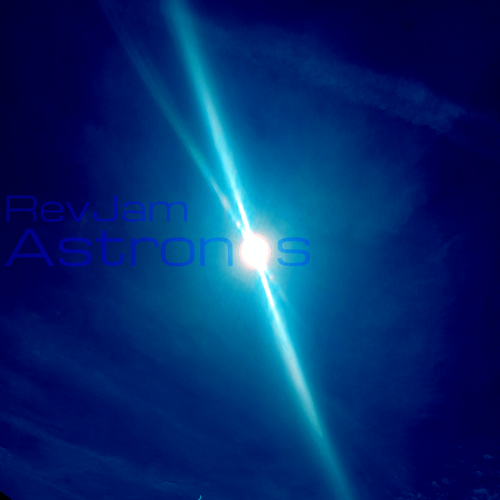

Tip: The higher the post is the newer!
My new EP is out (about 3 weeks ago)
5/18/2024
Yeah, I know, noticeable lack of posts going on at the website. I haven't really found the time (code word for being lazy) to update it for the past month, but now is the time. This is basically an announcement post to tell you guys about how I released a new EP! Over 3 weeks ago! Woohoo! Nonetheless, you should still check it out, and it's got a free download. The EP is called Astronos and you can find the link to the page to get it in the stuff section.
A band, half-eaten pizza pie, and a dream
4/16/2024


This sunday I went to a concert for a band called the Me First and the Gimme Gimmes. Essentially, they're a cover band who do songs from different eras, such as 80s, 90s, and surprisingly, even 2020s. Before we went to the show, we went to this eatery that served pizza. It's not their main thing, but they did it pretty well. Anyways, we get to the venue and watch the show. Turns out it was one of the player's birthday, and apparently he wished over 20 years ago to play a show in Pittsburgh on his birthday! Pretty neat! (probably not true though) What was true though was the fact that once we got back to the car, we had a half eaten pizza waiting for us with a side of catastrophically loud thunderstorms. Also sorta neat!